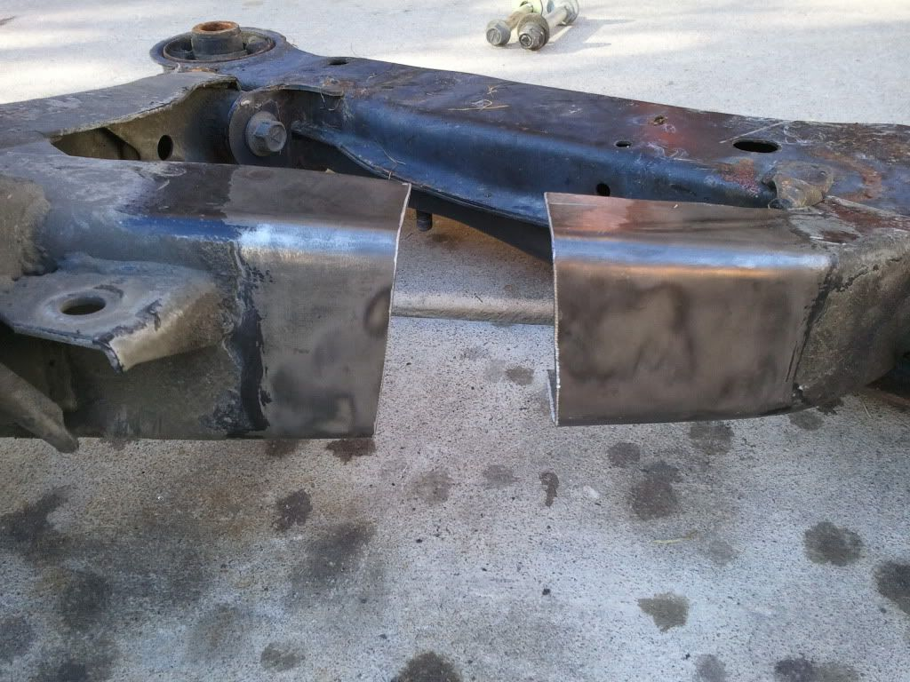
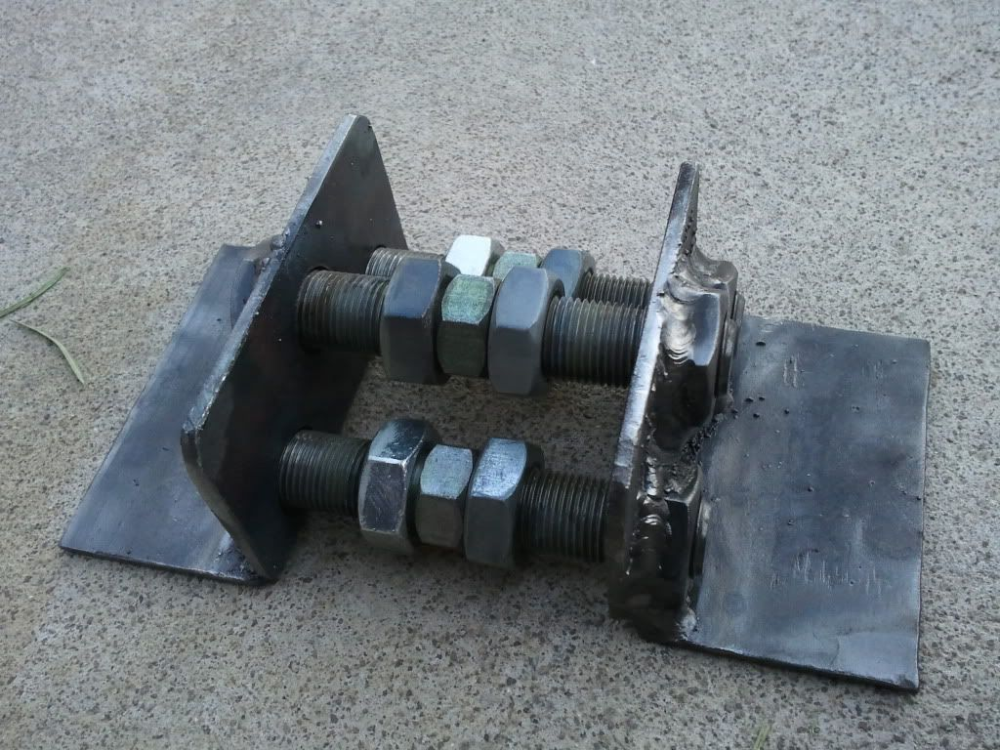
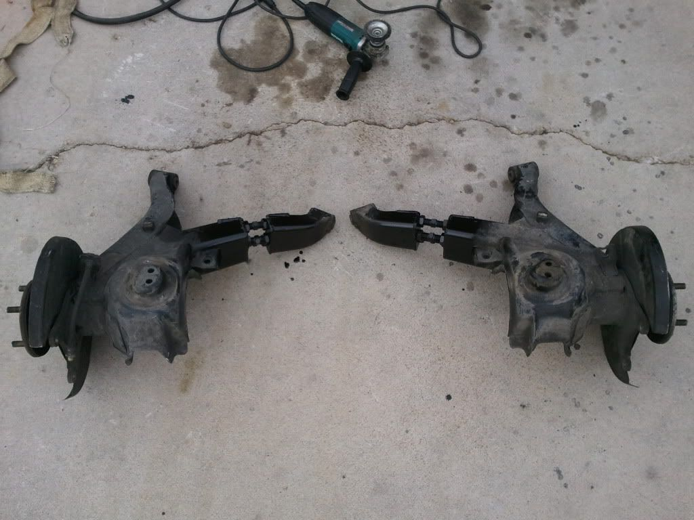
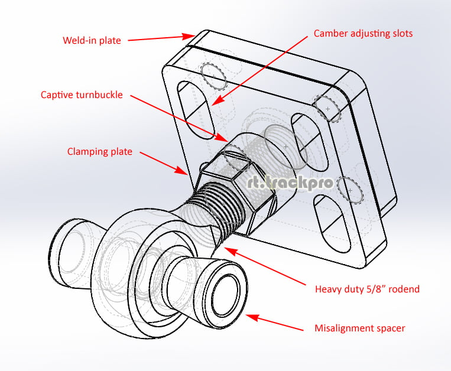

-
Re: Adjustable Toe and binding Reduction: Stage 2 Measure/Ca
[quote]adamvann3 wrote:what??? the two arms that hold the bushings are made with the bushing holes parallel to one another. when you extend one arm, you are pivoting one arm, and that changes the axis of both bushings in relation to one another. the inner bushing is the pivot point if you extend the outer arm length.Originally posted by Careless
again- it probably doesn't change it much- but it does change. there is no way to keep the bushing hole axis perfectly parallel unless you extend the inner arm as well; but that would defeat the purpose here, I think. -
Re: Adjustable Toe and binding Reduction: Stage 2 Measure/Ca
I know what you're getting at careless. I can't remember who it was, but I think someone mentioned issues with binding after doing the camber correction "extend ears, drill hole way lower" method.
The method that G E shows will cause the inbound bushing to be rotated towards the rear of the car as the hub is pushed rearward because there's still a solid link between the hub and the inbound bushing. The only way I see to counteract this would be to cut the inbound arm as well and shim it similarly, only cutting more material away and shimming back up to just-shorter-than stock geometry.

1988 300zxt. gt35, stance, etc. Wheels: Varrstoen ES2 18x9.5 et-13 225/40. 18x10.5 et0 245/40
1990 jetta vr6'd -
Re: Adjustable Toe and binding Reduction: Stage 2 Measure/Ca
exactly that, except it's on the horizontal axis in terms of bushing bind, and not the vertical.DeleriousZ wrote: I know what you're getting at careless. I can't remember who it was, but I think someone mentioned issues with binding after doing the camber correction "extend ears, drill hole way lower" method.
I'm not sure it would make a huge difference, and if adam is replacing the bushings with rod-ends, then it most likely will not change anything because of the amount of angle rod ends can exhibit- but I didn't really read most of this thread or his posts regarding the subject, so I'm not even sure what he's doing and what he ordered. But with regular bushings- binding is something to think about.
you COULD slot the outer hole of the inner bushing, and then re-weld a washer or fill the slot to the proper axis, but you lose adjustability… and you might have to tweak the bolt-ears with a finely calibrated smashometer to get them to bind less. -
Re: Adjustable Toe and binding Reduction: Stage 2 Measure/Ca
well obviously there's 2 motions allowed by what I suggested
the first being lateral with shims, this would be so minor I wouldn't worry…
the second being vertical, and careless is right here, the inner tabs can be hammered a little to allow the twist
(to visuablize it for people, hammer bottom of tabs inward, tops outward -- literally 2mm is probably too much) -
Re: Adjustable Toe and binding Reduction: Stage 2 Measure/Ca
I knew you missed me :Padamvann3 wrote: I like your style. -
Because someone else is doing something similar I thought I'd bump this thread with pics… but I can tell you right now, my snazzy drawing above with the sandwich plates for the outer arm, and a rodend/spherical conversion for the inner arm (or both) is the way to go
But anyway, here's what they are mucking about with:


 -
Fixes toe, thats for sure. I hope everything was welded square or camber could get interesting.86na - BlueZ
Shiro #366 - Kouki Monster
85t - Mr Tickles -
I can look into making up a weld-in kit that does what I'm talking about sometime at the end of march…
Anyone interested in something like that? -
I'm interested in your rod end spherical conversion, I got to the point where I'm happy with my sub frame and just couldn't be arsed detailing out the spherical bearings.85 Turbo Slick Top
__________________________________________________ _____ -
Yes. I am interested in reducing binding and toe adjust-ability in the shiro. Similar to James, I am happy with where I am at with camber, just want to optimize static toe and dynamic motion.G-E;n769797 wrote: I can look into making up a weld-in kit that does what I'm talking about sometime at the end of march…
Anyone interested in something like that?86na - BlueZ
Shiro #366 - Kouki Monster
85t - Mr Tickles -
I have interest in something like that. Being able to class for national SCCA/NASA with the original trail-arm suspension and keep toe/binding issues in check is why. I think if there are many others out there wanting to road race their Z31's you'll be able to make some profit too. -
Sounds like I have to devise 1 multiple plane adjuster… I'll aim for summer, but I have a plan
-
I would also be interested -
How about this on both arm pivots? Much more effective if you can tilt from each side, and adjust length…
 -
^Nice.
How about if you made the inner lower hole on the inner arm a hole, for the pivot point of camber adjustment, with slight slots for the other 3 holes. This way you can be sure that relative height from ground to lower side of inner arm from each side are the same height to make adjustments easier. And for the outer arm you could use the above illustrated part with all slotted holes for main camber adjustment.
OR, you could just make the inner arm have a plate with just one central hole for camber adjustment pivot for ease of manufacture.
1986 300ZX Turbo…sold
1990 Skyline GT-R…new money pit
2014 Juke Nismo RS 6-speed…daily

Copyright © 2006–. All rights reserved. Privacy Policy